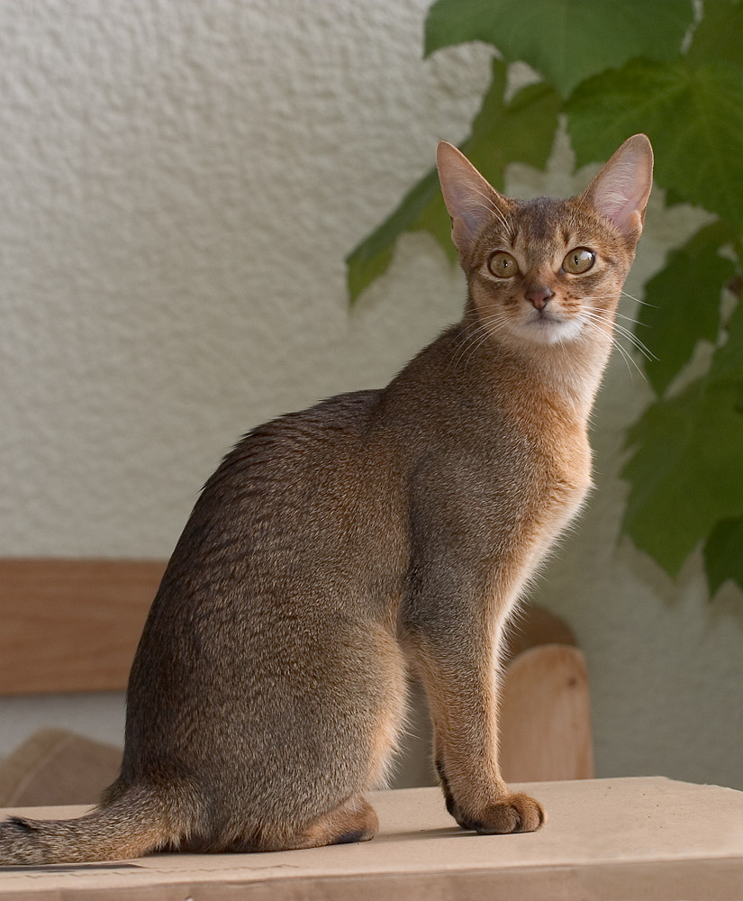
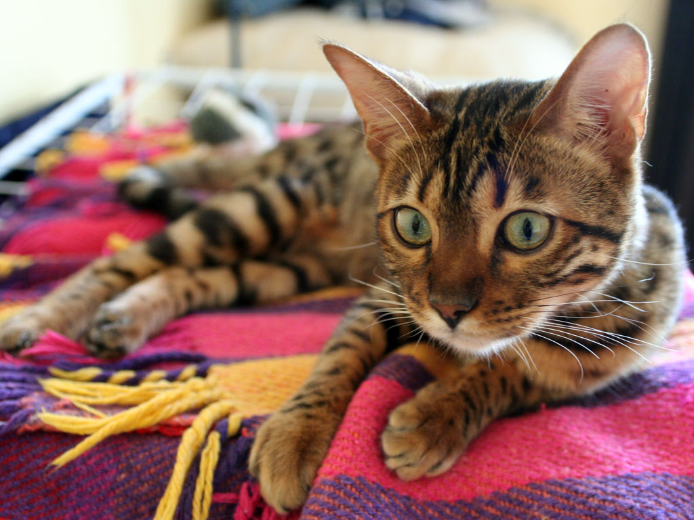
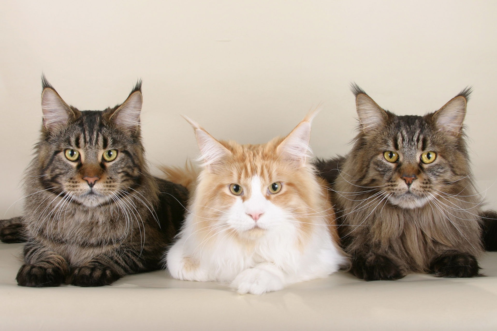

Тут може бути реклама
«Ми відповідаємо за тих, кого приручили», - цитата з філософської повісті Антуана де Сент-Екзюпері.
Щорічно, 8 серпня , за ініціативою Міжнародного фонду захисту тварин відзначається Всесвітній день кішок . За статистикою, 80% людей мають домашніх улюбленців. При цьому, коти займають перше місце від загальної кількості вихованців. Але котики завоювали не тільки реальний світ, вони стали супер героями всіх соцмереж. Затишне муркотіння, м’які лапки. Хто хоч раз не приносив додому милий, пухнастий, беззахисний клубочок?! Мало хто, байдужий до цих грайливих, ласкавих і дуже розумних тварин. Кішки є справжнім домашнім хижаком. Вони не лише оберігають домівку від гризунів, але і як багато хто стверджує, лікують та продовжують життя господарю. Кожен кіт має свій особливий характер. У багатьох країнах існують спеціальні парки для вигулювання котів, а також різні котячі магазини, кафе та готелі, де улюбленця можна поселити на деякий час.
«Ми відповідаємо за тих, кого приручили», - цитата з філософської повісті Антуана де Сент-Екзюпері.
| Зображення | Назва породи | Опис породи |
|---|---|---|
|  | Абісинська кішка | - порода кішок, що має особливе забарвлення (зональне), схоже на забарвлення зайців або кроликів. На тілі немає ніякого малюнка. Таке забарвлення забезпечується тим, що кожен волосок має смуги, які чергуються (тікінг) — світлі (жовті або охристі) і темні (чорні або коричневі). Відбувається це тому, що при розвитку волосся в ньому впереміш відкладається то темний, то світлий пігмент. У зайців або кроликів на волоску є тільки одне темне кільце, тоді як в абісинських кішок два або три (подвійний або потрійний тікінги). Таке забарвлення також називають агуті. |
|  | Бенгальська кішка | — рідкісна порода кішок, що виведена в результаті селекційної роботи. Забарвлення коричневе, сніжне (сріблясте), блакитне з малюнком табі: або плямистим, або мармуровим. Найпоширенішим є коричневе плямисте забарвлення. Колір очей у коричневих кішок золотавий. |
|  | Мейн-кун | – це по праву американська гордість. Неймовірні коти з прекрасно складеним міцним тілом, вухами як у рисі і довгим, красивим і красиво опущеним хвостом. Цю породу не створювали штучно і не вмішувалися в її зовнішній вигляд – вона і зараз лишається такою, якою були її предки і якою її створила природа. |
визначення загального стану тварини (габітус)
від 70 грногляд очей, вух, шкіри та шерсті
від 100 грнперевірку ротової порожнини, стану зубів та ясен
від 50 грнвизначення ваги тіла тварини
від 20 грнЗа результатами профілактичного огляду лікарем може бути призначене проведення додаткових (спеціальних) досліджень, які попередньо мають погоджуватися із власником. У разі їх проведення додаткові дослідження та маніпуляції власник оплачує самостійно.
© Copyright 2020